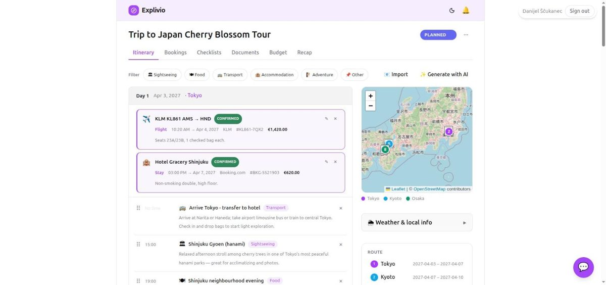

Explivio
personal · open source · .NET 10A modern, distributed, AI-first trip-planning platform — built as a reference-quality showcase of how I design systems today.

One API (a modular monolith with vertical slices) plus independently-deployed workers, an event-driven core with a transactional outbox over Azure Service Bus, and a CQRS read model kept current by an event-driven projector. AI is a first-class capability: itinerary generation with structured outputs, an agentic chat assistant that edits the trip via tool-calling, and RAG over Cosmos DB vector search — all streamed to the UI over SignalR. Observable, tested, and deployable to Azure Container Apps from the Aspire model.
.NET 10 · Aspire
Event-driven outbox
CQRS read model
AI gen · assistant · RAG
Real-time SignalR
Azure Container Apps
OpenTelemetry
Testcontainers · CI
Entra External ID
React · Expo